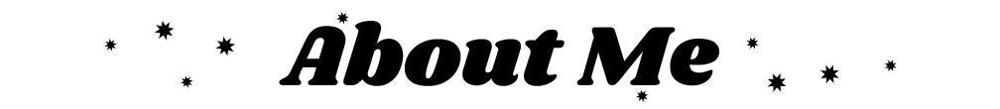
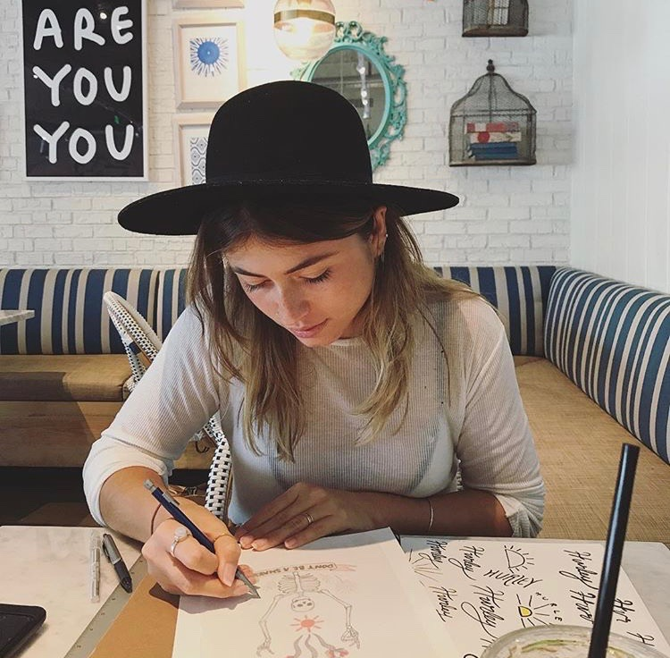

Home |
Raster |
Vector |
Time Based Media |
About |
Contact

My name is Janei Lujan, and I am an artist currently studying to achieve my Bachelor's in Graphic Design. I am a first year student, and my interest in Graphic Design stems from my passion for art and design. My existing experience has been focused on fine arts such as, painting and illustration. I have roughly two years of freelancing experience, all of which was obtained through word of mouth and in-person networking. My goal is to obtain a degree in graphic design with an emphasis in illustration so that I can stay true to my love for handmade art while being able to enhance it with digital skills.